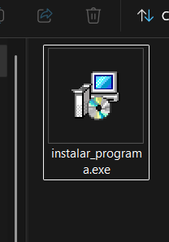
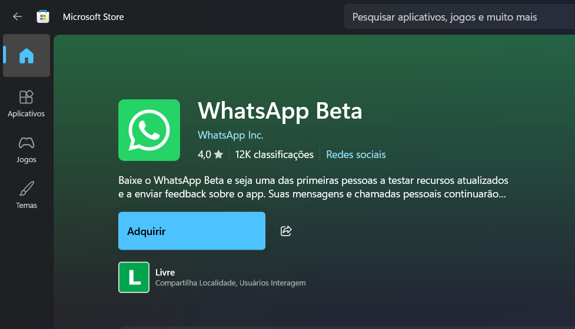
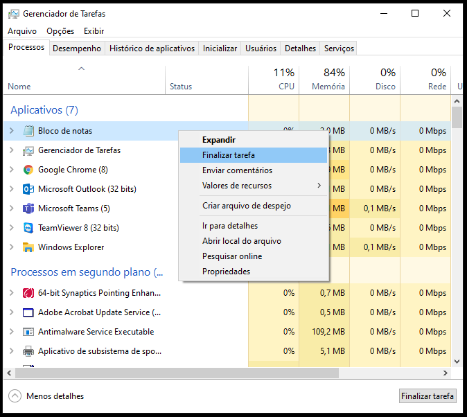

Os arquivos com extensão .exe são programas que você pode executar no Windows. Eles são como atalhos que abrem aplicações no seu computador.
Quando você baixa um programa da internet, geralmente vem como um arquivo .exe. É importante ter cuidado ao instalar esses programas.
Ao instalar um programa, sempre leia os termos de uso e as opções de instalação. Muitos programas tentam instalar programas extras que você não precisa.
Dicas importantes:

A Microsoft Store é uma loja oficial da Microsoft onde você pode baixar e instalar programas com segurança. Todos os programas da Store são verificados e seguros.
Como usar a Microsoft Store:
Se você não precisa mais de um programa, pode removê-lo do computador para liberar espaço.
Passos para desinstalar:
Para programas da Microsoft Store, você também pode desinstalar diretamente da Store.
O Gerenciador de Tarefas ajuda você a ver quais programas estão rodando e fechar aqueles que travaram.
Como abrir o Gerenciador de Tarefas:

Quando um programa para de responder, você pode fechá-lo usando o Gerenciador de Tarefas.
Passos:
Se o programa não fechar, você pode tentar novamente ou reiniciar o computador.